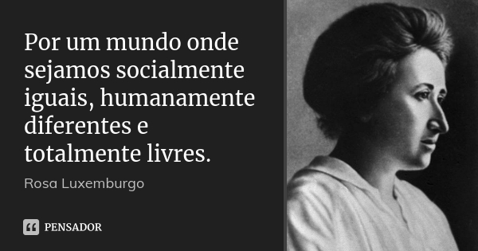

A igualdade de gênero pode ser definida pela busca de igualdade entre os gêneros humanos, feminino e masculino, ou seja, mulheres e homens. Para enfatizar o assunto, é necessário apresentar dados e estatística. Desde os primórdios os homens e mulheres são definidos por suas “funções”, e no amplo século XXI, crianças ainda são criadas com a ideia de que as meninas devem usar cor rosa e brincar de boneca enquanto os meninos devem usar azul e brincar de bola, por isso, as pessoas deveriam praticar a igualdade de gênero acabando com o “machismo” e a idealização do que representa as funções de um homem ou uma mulher.
A ONU (Organização das Nações Unidas), implementou em 2015, 17 objetivos de desenvolvimento sustentável (ODS), assim criando também a agenda 2030, um projeto com 169 metas a serem cumpridas até o ano definido, com a finalidade de conquistar um futuro melhor ao mundo. Vale destacar das 169 metas as que mais causaram impacto em relação à igualdade de gênero. A meta número 20 criada em setembro de 2015 em Nova York pelos chefes de Estado e de Governo e altos representantes, declara o seguinte: “Mulheres e meninas devem gozar de igualdade de acesso à educação de qualidade, recursos econômicos e participação política, bem como a igualdade de oportunidades com os homens e meninos em termos de emprego, liderança e tomada de decisões em todos os níveis”. De acordo com Pedro Balerine as mulheres estudam mais que os homens, entretanto, o salário e as oportunidades das mulheres são menores do que as dos homens, de acordo com o site Agência Brasil (https://agenciabrasil.ebc.com.br/), as mulheres ganham somente 47,29% desde 2019 da renda total dos homens.
Na meta 27 destaca-se o seguinte: “Vamos trabalhar para construir economias dinâmicas, sustentáveis, inovadoras e centradas nas pessoas, promovendo o emprego dos jovens e o empoderamento econômico das mulheres, em particular, e o trabalho decente para todos”. Como citado na meta número 20, as mulheres deveriam receber as mesmas oportunidades que os homens. Há tamanha discrepância nos salários das mulheres se comparadas com a dos homens, mesmo que o serviço realizado pelos dois seja o mesmo. Em relação a meta 35 conseguimos destacar o seguinte: “Devemos redobrar os nossos esforços para resolver ou prevenir conflitos e para apoiar os países em situação de pós-conflito, incluindo por meio da garantia de que as mulheres tenham um papel na construção da paz e do Estado”. Para a construção de um novo governo onde a paz e a igualdade possam andar do mesmo lado, as mulheres deveriam possuir um grande cargo na mudança do mundo, sem diferenciação ou discriminação. Na meta 51 podemos encontrar: “As crianças e as mulheres e homens jovens são agentes fundamentais de mudança e encontrarão nos novos Objetivos uma plataforma para canalizar as suas capacidades infinitas pelo ativismo em prol da criação de um mundo melhor”. Com as novas mudanças, a humanidade poderá ser livre, sem preconceitos, discriminação e desigualdade, onde as mulheres podem ter as mesmas possibilidades que os homens.
O mundo ainda precisa de mudanças, a igualdade infelizmente ainda não é nossa realidade, porém, durante os séculos existiram pessoas incrivelmente fortes, que conquistaram metade da evolução para um mundo onde as mulheres pudessem começar a ter direitos. Podemos começar a ver as mudanças na sociedade, em 1932, onde o sufrágio feminino foi assegurado pelo primeiro Código Eleitoral brasileiro, retirando todas as restrições do voto da mulher. Existiram e existem grandes mulheres que conseguiram melhorar o mundo, é possível destacar grandes exemplos; mulheres que fazem parte do movimento feminista, onde procuram igualdade entre mulheres e homens. Anne Frank, Frida kahlo, Maria da Penha, Malala Yousafzai, conseguiram grandes conquistas para a sociedade, elas melhoraram em diversos aspectos a influência das mulheres na aristocracia. Em múltiplos filmes e séries é possível perceber a diferenciação entre os gêneros, as discriminações e desigualdades sofridas pelas personagens, apesar de que a maioria desses não são baseados em fatos reais eles abordam os problemas tangíveis da sociedade no contemporâneo e no anacrônico, podemos ver isso no filme Mary Shelley e na série Anne With An E, neles não são retratados somente a diferenciação entre mulheres e homens, mas também os preconceitos entre raças e as pessoas LGBTQ.
